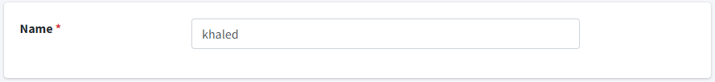

--admin--

we use admin to customize admin layout, display data and accessability.

models:
class Client(models.Model):
    name = models.CharField(max_length=100, verbose_name='Name')
    email = models.EmailField(unique=True)
    created_at = models.DateTimeField(auto_now_add=True)

in admin.py:
create class:
class ClientAdmin(admin.ModelAdmin):
    list_display = ["name", "email"]
admin.site.register(Client, ClientAdmin)

list_display
list_display = ["name", "email"]
used to define which columns to be displayed in model objects


list_display_links
list_display_links = ("name", "email")
note: use it with list_display
enable fields to be clickable. when you click it, it will enter the object.


exclude
exclude = ("id", "email")
used to edit all columns except the excluded fields


date_hierarchy
date_hierarchy = 'created_at'
used to filter objects depend on date


search_fields
search_fields = ['email']
used to search about specific fields


list_filter
list_filter = ['name']
used to display filters depend on specific fields


readonly_fields
readonly_fields = ("id",)
used to define which fields are just for read.


add action:
Model:
class Message(models.Model):
    content = models.TextField()
    read = models.BooleanField(default=False)

Admin:
from django.contrib import admin
from .models import Message

class MessageAdmin(admin.ModelAdmin):
    list_display = ["content", "read"]
    actions = ['close_message']

    when click on action. all selected messages will be read
    def close_message(self, request, queryset):
        for obj in queryset:
            obj.read = True
            obj.save()
    # define how action will be display
    close_message.short_description = 'Close Message'

admin.site.register(Message, MessageAdmin)


customize permissions:
define who can add, remove, edit and view model.

class MessageAdmin(admin.ModelAdmin):
    def has_add_permission(self, request):
        # all super user can add message data.
        return True

    def has_delete_permission(self, request, obj=None):
        # no one can delete message data.
        return False

    def has_change_permission(self, request, obj=None):
        # all super user who has change permission can edit message data.
        return False if obj else super().has_change_permission(request, obj)

    def has_view_permission(self, request, obj=None):
        # all super user can view message data.
        return True